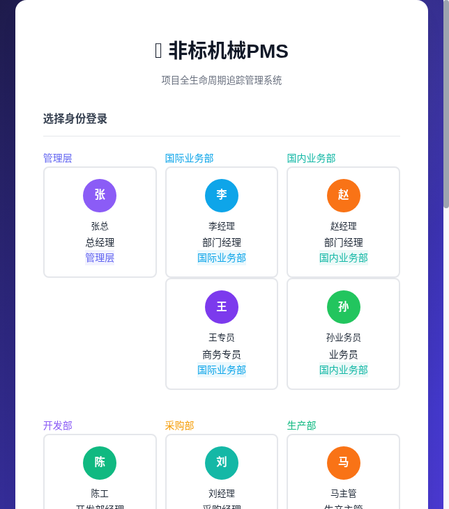
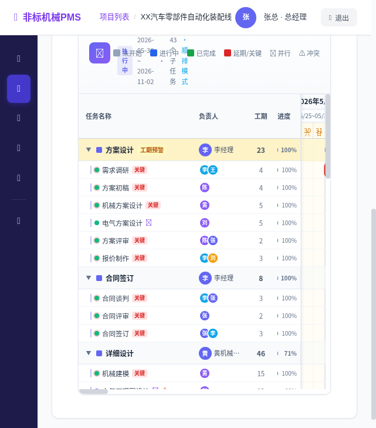
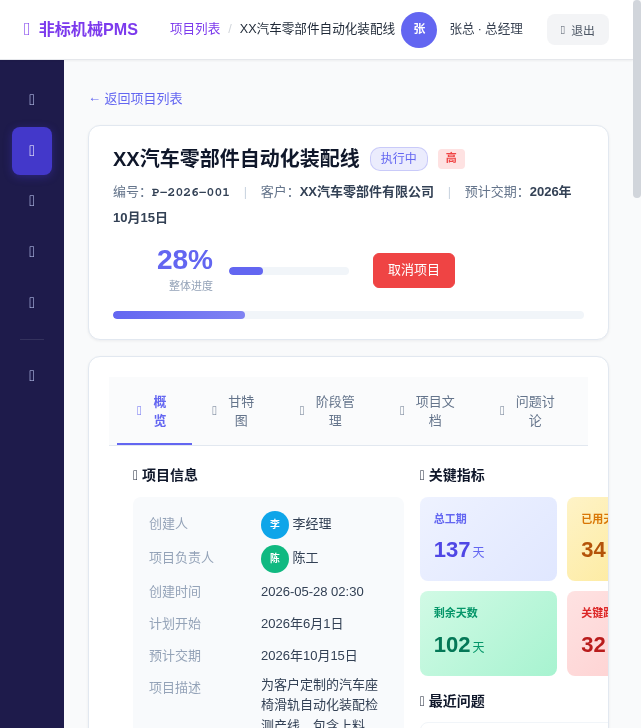
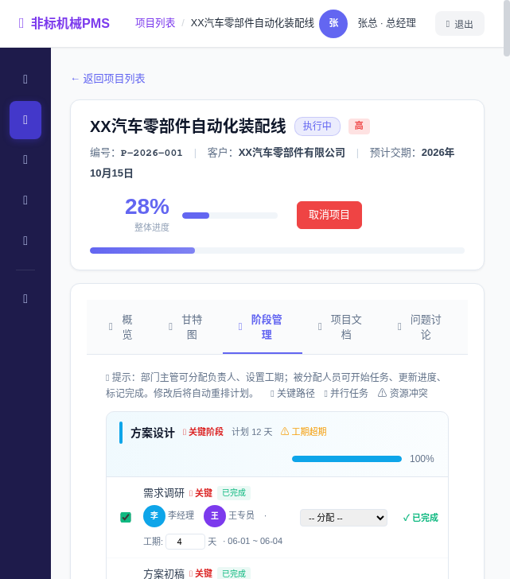
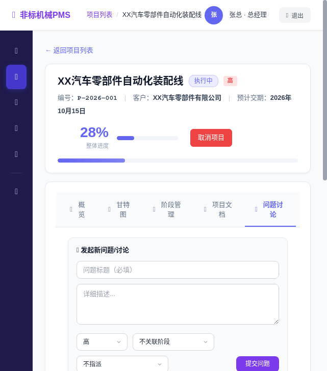
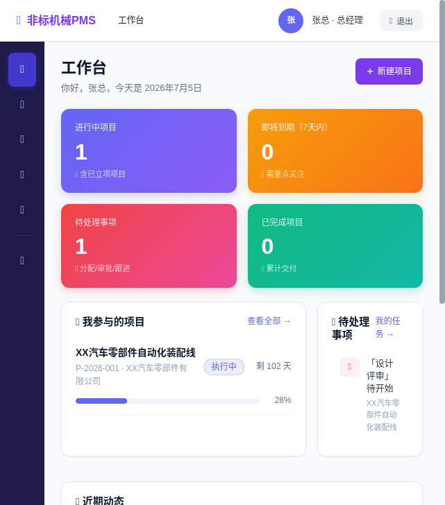

01 / 项目背景
一个行业痛点，催生一个工具
在非标机械制造行业，每个项目都是"一单一定制"。从方案设计、报价、合同、详细设计、采购、焊接、装配、厂内调试、出货、场内调试到客户验收，跨 8 个部门协作，并行任务多、依赖关系复杂。
通用项目管理工具（飞书/Trello）缺乏行业特性，专业工具（MS Project/Primavera）太贵太重中小企业用不起。于是我决定用 Trae AI 辅助，从零打造一个专为非标机械行业设计的轻量级PMS。
>40%
非标项目平均延期率
3-5天
跨部门信息滞后
8部门
全流程协同
🔀
并行任务复杂
长交期采购需提前启动、焊接与采购交叉作业，传统甘特图难以表达四种依赖关系。
🔒
信息可见性混乱
草稿不能给所有人看、采购不需要看调试细节，各部门该看什么缺乏精细控制。
⚠️
异常发现滞后
工期超期、资源冲突往往事后才发现，缺少自动预警和关键路径识别。
💰
专业工具门槛高
MS Project 价格昂贵且需要专业PM知识，中小企业没有专职计划员。
02 / 核心功能
为非标机械量身打造

📊 CPM智能排程引擎 + SVG甘特图
- 完整实现 CPM关键路径法：前向推演(ES/EF) + 后向推演(LS/LF) + 拓扑排序 + 环检测
- 支持四种依赖关系：FS完成-开始、SS开始-开始、FF完成-完成、SF开始-完成
- 支持 Lead/Lag（负lag实现并行工程，如机械建模未完成即可提前14天启动长交期采购）
- 关键路径自动红色高亮，时差(slack)自动计算
- 跨项目资源冲突检测，工期超期自动预警
- 纯 SVG渲染，不依赖任何图表库，矢量输出无级缩放
- 正排(ASAP)/倒排(ALAP)一键切换

🔄 全生命周期状态管理
- 10个状态：草稿 → 报价中 → 合同签订 → 立项审批 → 执行中 → 出货中 → 场内调试 → 客户场内验收 → 已完成/已取消
- 阶段门审批机制：合同签订后需管理层审批立项
- 新增"场内调试"和"客户场内验收"阶段，贴合非标机械实际交付流程
- 两套流程模板：标准自动化流程(10阶段/43子阶段)、简易流程(6阶段/13子阶段)


🔐 基于角色的可见性矩阵
- 8部门 × 10状态精细化权限控制
- 售后调试部在装配阶段即可看到项目（提前做发货准备）
- 采购部在设计阶段即可看到BOM（提前询价）
- 草稿阶段仅创建人可见，已完成项目全员只读归档
- 预置18个真实企业角色，开箱即用
💬 协作与文档
- 9类文档分类管理：方案/合同/设计/采购/生产/焊接/调试/验收/售后
- 问题/风险/变更三类议题，支持评论回复和状态流转
- 工作台仪表盘：关键指标、待办事项、近期动态时间轴
- "我的任务"视图：按项目分组，红/橙/蓝/绿色彩编码优先级


03 / 技术架构
纯前端实现，零依赖打开即用
┌─────────────────────────────────────────────────────┐
│ 前端 SPA (HTML/CSS/JS) │
│ ┌──────┐ ┌──────┐ ┌──────┐ ┌──────┐ ┌──────┐ │
│ │仪表盘│ │甘特图│ │阶段管│ │文档/│ │我的 │ │
│ │ │ │(SVG)│ │理 │ │讨论 │ │任务 │ │
│ └──┬───┘ └──┬───┘ └──┬───┘ └──┬───┘ └──┬───┘ │
│ └────────┼────────┼────────┼────────┘ │
│ ┌───┴────────┴───┐ │
│ │ app.js 主逻辑 │ │
│ └───┬────────┬───┘ │
│ ┌───────────┴──┐ ┌───┴───────────┐ │
│ │ scheduler.js │ │ auth.js │ │
│ │ (CPM引擎) │ │ (权限/可见性) │ │
│ └──────────────┘ └───────────────┘ │
│ ┌──────────┐ ┌──────────┐ ┌──────────┐ │
│ │gantt.js │ │ui.js │ │data.js │ │
│ │(SVG渲染)│ │(UI组件库)│ │(数据/种子)│ │
│ └──────────┘ └──────────┘ └────┬─────┘ │
└──────────────────────────────────┼────────────────┘
│
┌────────┴────────┐
│ localStorage │
│ (数据持久化) │
└─────────────────┘
技术亮点
- 零构建：不需要 npm/webpack/vite，双击 index.html 即可运行
- 零后端依赖：MVP使用localStorage，未来可无缝接入Node.js后端
- 零外部库：不依赖React/Vue/jQuery/ECharts，甘特图纯手写SVG
- CPM算法：46个测试用例全部通过，支持四种依赖+环检测
- 权限系统：14个API方法，63个权限测试用例
- 代码量：6个JS模块约 5000行代码
04 / AI 协作
Trae 贯穿全流程
从需求到代码、从架构到测试、从文档到演示，Trae AI 全程参与了项目的每个环节：
🎯 需求分析
从"我要一个项目追踪系统"的模糊描述，提取扩展有效需求，参考开源项目给出架构方案
🏗️ 架构迭代 (v1→v5)
5个版本持续演进：MVP → 子阶段+甘特图 → 四种依赖+并行工程 → 可见性矩阵 → 场内调试+CPM引擎
💻 代码生成
6个核心模块全部AI辅助生成：data.js/scheduler.js/gantt.js/auth.js/ui.js/app.js
🧪 测试调试
浏览器集成测试验证功能，CPM算法46个测试用例，权限63个测试用例
📝 文档产出
架构文档、14页PPT演示、README、比赛帖文，一气呵成
05 / 快速体验
30秒上手
# 方式1：直接打开
用浏览器打开 pms-app/index.html
# 方式2：本地服务器
cd pms-app && python3 -m http.server 8080
# 访问 http://localhost:8080
推荐体验身份
👔
张总（总经理）
全局权限，可看到所有项目、审批立项、取消项目
🤝
李经理（国际业务部）
创建项目、管理合同、推进前期状态
🔧
陈工（开发部经理）
设计阶段管理、分配设计任务、查看BOM
🏭
马主管（生产主管）
装配阶段管理、推进出货状态
⚙️ 用 Trae 创造可能
Demo项目预置：XX汽车零部件自动化装配线（P-2026-001），真实场景数据，进度28%，可体验甘特图、阶段管理、问题讨论等全部功能。
让项目管理更简单 — 从非标机械行业开始